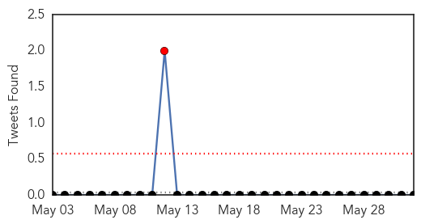

Meningitis
30-Day Web Trend
0 alerts, 0 warnings

30-Day Twitter Trend
1 alerts, 0 warnings

Article Locations

Article Confidences

Top Articles:
- 0.966
- University of Oregon Confirms Seven Meningitis Cases
- 0.959
- ‘Brain-eating’ amoeba kills 6th victim in Karachi
- 0.871
- Hajj: Bauchi Pilgrims to undergo Ebola, Meningitis screening
- 0.836
- Seventh Case In University Of Oregon Meningitis Outbreak Confirmed, Could Prompt Mandatory Vaccines
- 0.824
- 'Man flu' could be meningitis, charity warns Plymouth men
- 0.817
- Leawood teen, a freshman at KU, dies from bacterial meningitis
- 0.687
- Health Ministry approves meningitis vaccine sales
Top Tweets:
-
No tweets found for Jun 01, 2015
Measles
30-Day Web Trend
0 alerts, 0 warnings

30-Day Twitter Trend
0 alerts, 0 warnings

Article Locations

Article Confidences

Top Articles:
Top Tweets:
-
No tweets found for Jun 01, 2015